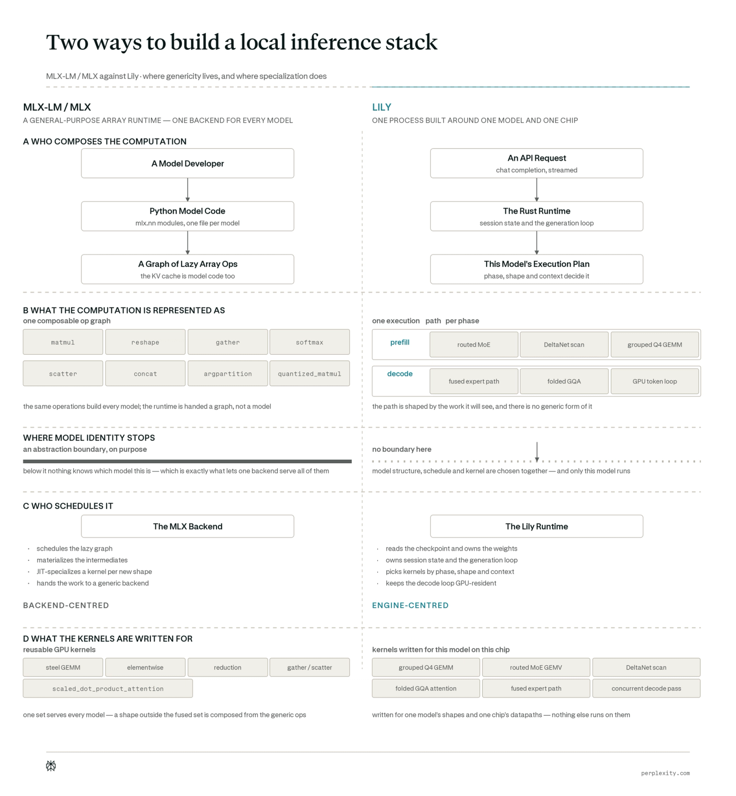
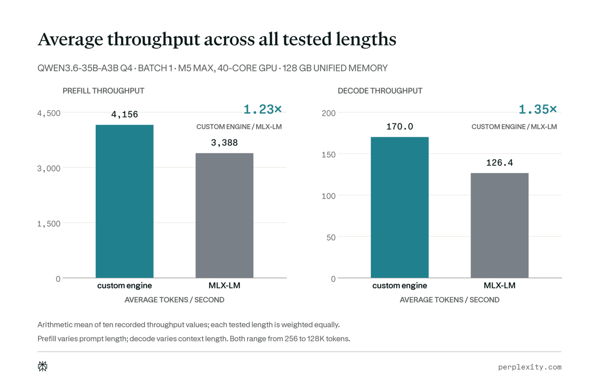
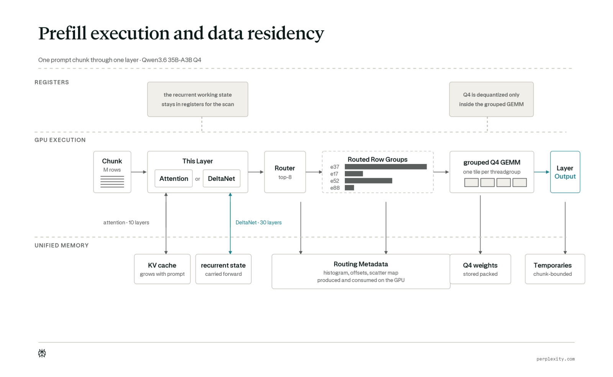
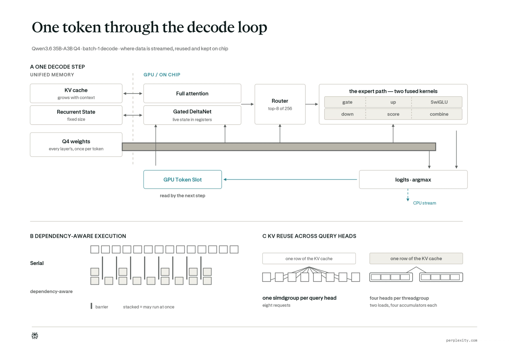
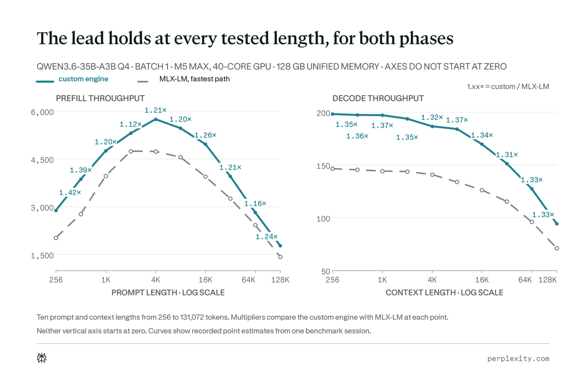

一个自定义本地引擎，用于提升预填充和解码吞吐。
Apple silicon上的混合计算 在云端前沿智能与Mac上的本地模型之间编排任务。云端模型负责研究与推理，而本地模型则处理Mac上的私有文件和应用。
为使这种分工协作流畅无间，本地推理必须跟上任务其余部分的节奏。这要求引擎能快速处理提示词，并维持高token生成速率。
Lily，我们的轻量级本地推理引擎，专为Apple silicon和Qwen3.6-35B-A3B打造，针对预填充和解码分别进行了优化。该引擎即将开源。
在Mac上运行LLM（大语言模型）的常见方式是使用MLX，这是Apple专为Apple silicon开发的开源机器学习框架。其配套库MLX-LM增加了加载各类语言模型并生成文本所需的组件。MLX与MLX-LM共同为本地LLM（大语言模型）推理提供了开箱即用的通用技术栈。
Qwen3.6-35B-A3B是一个稀疏混合模型：它采用混合专家（MoE）路由，并将固定大小的循环状态与全注意力机制相结合。这些架构选择减少了所需计算量，但也带来了不规律的工作负载。Token被路由到不同的专家权重，而循环状态本质上是顺序性的。
MLX-LM已为推理阶段和常见工作负载形态选择了优化的内核，但其可复用操作必须支持多种模型架构。专为Qwen打造的引擎可以在模型和运行时层面进行专门化，围绕模型的固定结构协调内核、数据移动和调度。
Lily在单个进程中端到端地实现了这种特化。一个Rust运行时加载模型检查点并管理会话状态和生成循环，一个兼容OpenAI的chat-completions API接受请求并流式输出token，自定义Metal内核执行Qwen特有操作。PyTorch和MLX均不在执行路径中。

我们分别测量prefill和decode性能。Prefill吞吐反映引擎处理提示词的速度；decode吞吐反映其生成输出token的速度。
我们在搭载M5 Max（40核GPU、128 GB统一内存）的单台MacBook Pro上对Qwen3.6-35B-A3B进行基准测试。在prefill的十种提示词长度和decode的十种上下文长度（从256到128K token，K = 1,024）下，该引擎平均达到MLX-LM prefill吞吐的1.23倍和decode吞吐的1.35倍。在4K-token提示词和4K-token decode上下文下，自定义引擎达到每秒5,749.9个prefill token和每秒186.6个decode token，而MLX-LM分别为4,737.5和140.9。在多轮会话中，这些时间节省随每次额外模型调用而累积。

接下来，我们解释Qwen的架构如何在Apple silicon上创造模型特定的优化机会。然后我们逐步介绍由此产生的prefill和decode改动。我们还会讨论额外优化在何处不再带来收益，最后与MLX-LM进行端到端对比。
Qwen3.6-35B-A3B包含350亿参数，但每个token仅激活约30亿参数。路由器对256个专家子网络进行评分并选出8个，同时还有一个共享专家处理每个token。这种稀疏MoE设计减少了计算量，但会导致工作负载不均：不同专家接收的token数量不同，且每个token需要来自不同专家组合的权重。
Qwen还将10个全注意力层与30个Gated DeltaNet层相结合。这两种层类型以不同方式保留早期信息。
注意力层使用 分组查询注意力（GQA）。Qwen有16个查询头和2个键值（KV）头，每8个查询头共享一个KV头。共享使KV缓存更小，并允许缓存数据在查询头之间复用。缓存仍会为每个token存储新的键和值，因此随着上下文增长，每个解码步骤读取的数据量也随之增加。
Gated DeltaNet则将早期信息压缩为固定大小的循环状态。学习到的门控控制保留多少现有状态，而增量更新则整合当前token的信息。模型以循环方式定义这些更新，因此每个token依赖于前一个token产生的状态。然而，在预填充阶段，引擎可以通过两种方式评估相同的计算。它可以直接扫描token并携带状态前进，或者将更新重组为块，以暴露更多矩阵运算和token级并行性。哪种方法更快取决于模型维度、工作负载和硬件。
这些结构共同形成了三种计算模式：不均匀的专家分组、对不断增长的缓存的注意力，以及可被直接或分块评估的固定大小循环。
预填充一次性处理多个提示token激活行。此处考虑的本地工作负载通常一次解码一个请求（批次1），且每步处理一个新行。这种差异改变了相同模型权重的使用方式。预填充可以在数百或数千行中复用每个权重块。解码则基本无法做到，因为每个新token都需要再次遍历权重。
Apple silicon将CPU和GPU置于统一内存之后，这是一个两者均可访问的单一物理内存池。这使得模型可以驻留内存而无需维护单独的GPU副本，但这并不意味着数据移动是免费的。读取权重和中间值仍会消耗内存带宽，而寄存器和其它片上存储更快但容量小得多。
M5 GPU还提供不同的计算路径。Prefill的线性层使用通用矩阵-矩阵乘法（GEMM），一次将权重矩阵应用于多行。兼容的GEMM可通过Metal 4张量操作 使用每个GPU核心中的Neural Accelerator。Batch-1 decode则使用通用矩阵-向量乘法（GEMV），将相同权重应用于一行。由于权重重用较少，GEMV主要受内存带宽限制，更适合GPU的向量算术逻辑单元（ALU），而非专为具有更大数据重用的矩阵操作设计的Neural Accelerator。
这些执行路径并非Lily独有。MLX在同一统一内存上运行，并根据工作负载形状选择优化的矩阵和向量内核。MLX-LM的Qwen实现 已对专家工作分组，使用融合的循环Metal内核评估Gated DeltaNet，并采用GQA感知的注意力机制。这些能力是在Apple silicon上高效运行Qwen推理的共同起点。
Lily的范围更窄，使其能够围绕Qwen的确切架构和维度协调这些共享执行路径。它使用阶段特定的GPU路径，映射Qwen的专家、循环和注意力工作负载以最小化数据移动，并根据测量的工作负载形状选择内核和布局。该策略包含三个部分：
· 将GPU路径与推理阶段匹配。 当prefill可在多行间重用权重时使用面向矩阵的执行，当batch-1 decode一次处理一行时使用面向向量的执行。
· 在最小化数据移动的同时将Qwen的结构映射到GPU。 保持权重压缩直到使用，组织路由专家工作而无需返回CPU，通过其循环扫描在芯片上保留Gated DeltaNet状态，并重用分组查询注意力共享的KV数据。
· 使内核适应工作负载形状。** 在每个阶段内，根据可用行数、专家间的行分布、操作的维度以及当前上下文长度选择tile大小、执行布局和注意力路径。
以下部分解释这些选择。对于在M5 Max上通过匹配消融评估的优化，我们通过比较仅在被研究优化上有所不同的其他相同引擎配置来估计其效果。由于这些实验将引擎版本与自身进行比较，它们解释机制而非将最终结果与MLX-LM进行分解对比。
Prefill阶段一次性暴露大量token行，但Qwen将这些行不均匀地路由到各专家，并通过序列更新循环状态。其优化分为三组：围绕路由行组织稀疏专家计算、将Gated DeltaNet扫描保持在芯片上、以及将长提示划分为有界块。

#### 矩阵乘法期间反量化权重
Qwen3.6-35B-A3B检查点使用分组仿射4位量化。每个权重存储为4位整数代码，而每64个权重共享一个bfloat16缩放因子和偏置，用于重建其值。这将350亿参数模型从约70 GB的bfloat16权重减少到19.4 GB检查点，使得模型常驻Mac变得切实可行。
用于矩阵乘法的Metal 4张量操作消耗bfloat16操作数，而非打包的4位表示。在乘法之前，GPU必须以bfloat16重建权重。Lily中的优化分组GEMM一次转换一个小权重块，并将结果仅保留在片上线程组内存中，足够与路由激活行相乘。累加使用32位浮点数，输出以bfloat16写入。完整的展开权重数组从未在统一内存中创建。
在消融实验中，反量化作为独立操作运行：它将4位权重展开为统一内存中的bfloat16数组，随后矩阵内核读回该数组。在512 token提示下，将反量化移入分组GEMM通过消除中间写入和读取，端到端prefill吞吐提升了77.4%。
#### 在GPU上保留专家路由
分组GEMM需要将分配给每个专家的激活行存储在一起。为每个token选择八个专家后，直方图统计每个专家获得的分配次数。前缀扫描将这些计数转换为起始偏移量，散点步骤将行放置到各自的专家分组中，块映射列出分组GEMM必须处理的固定大小矩阵块。
优化路径将整个序列保留在一个命令缓冲区中，即GPU操作的有序批次，用于每个提示块。消融实验则暂停以便CPU检查路由中间结果并提交下一个操作。将直方图和前缀扫描保留在GPU上会增加两个内核，但消除了每个MoE层内部的CPU–GPU同步。
在512-token提示下，启用GPU驻留路由使端到端预填充性能提升了89%。这也说明了为何仅看内核数量可能具有误导性：更快的路径启动更多内核，但在层内从不等待CPU。
#### 将分块大小与专家负载匹配
在2K-token提示下，将每个token路由到256个专家中的八个会产生16,384个token–专家分配，即每个专家平均64个激活行。实际分布并不均匀：有些专家接收许多行，而其他专家接收较少。
分组GEMM将每个专家的输出划分为分块，这些分块是矩阵乘法输出的小矩形块。每个分块分配给一个GPU线程组。在Apple silicon的GPU上，线程组包含一个或多个simdgroup，每个simdgroup由32个以锁步方式执行指令的线程组成。
较大的分块将设置成本分摊到更多行并暴露更多并行工作，但当专家仅接收少量行时，大分块的一部分会处于空闲状态。因此，分块大小与simdgroup数量是相互关联的。
消融实验将tile固定为16行。以该对照组为基准，启用32行tile并搭配四个simdgroup后，2K token下的端到端prefill性能提升了13.2%。
在prefill阶段，每个Gated DeltaNet层按顺序扫描prompt，同时向前传递其循环状态。在禁用寄存器驻留的情况下，消融实验采用blockwise扫描。对于2K token的prompt，该路径每层移动256 MiB（mebibytes）的状态，并在屏障处反复停止协作线程，屏障是要求所有参与线程相互等待的同步点。
循环状态是一个矩阵。优化后的kernel将每一列分配给一个simdgroup。该simdgroup将列划分给其线程，一次性将列加载到寄存器中，并在整个扫描过程中携带状态。线程通过simdgroup操作而非threadgroup内存（线程组内共享的片上存储）交换中间结果。完整状态仅在扫描完成后写回。
状态及其门控使用32位浮点格式，因为小的舍入误差会在顺序更新中累积。Query和key激活保持为bfloat16。
在2K token的prompt下，启用寄存器驻留扫描使端到端prefill性能提升了5.6%。Expert GEMM约占prefill时间的90%。顺序扫描无法暴露足够的可复用矩阵工作，因此无法从Neural Accelerators中获益。
运行时将长prompt作为一系列有界块处理，而非一次性将所有prompt token的临时数据保留在内存中。模型权重常驻于统一内存，而循环状态和KV cache将上下文从一个块传递到下一个块。早期上下文不会被丢弃。
若不进行分块处理，临时激活数组会随完整提示词增长，并与模型权重、循环状态及KV缓存竞争统一内存。分块处理确保每次仅保留一个分段的临时值处于活跃状态，并在处理下一分段前释放或复用该存储空间。此举限制了峰值工作内存，使引擎能够在不改变模型输出的前提下处理更长的提示词。
分块预填充在许多引擎中广泛应用，对于在这些内存受限环境中服务长多轮轨迹至关重要。注意力层的总预填充时间仍与提示词长度呈二次方关系，且因重复加载先前分块的KV缓存而产生额外开销。
Batch-1解码每次处理一个新行。由于权重复用较少，其吞吐主要取决于引擎为每个token移动的字节数。解码改动分为四类：优化单行权重路径、保持每一步在GPU上执行、减少中间及状态流量、高效读取注意力缓存。

MLX已将单行工作分派至专门的矩阵-向量内核。由于Lily不使用MLX，自定义运行时必须提供相同的基本策略。我们的行并行GEMV专为单激活行设计。一个simdgroup协同处理输出，同时并行读取权重矩阵的不同部分。
#### 在GPU上保持token交接
每个解码步骤以选择下一个token结束；下一步骤以该token作为输入开始。将选择结果发送到CPU再返回GPU，会为每个token增加一个同步点。我们的运行时改为在两个命令缓冲区和两个GPU驻留token槽之间交替。GPU选择得分最高的token，并将其token ID直接写入下一步解码的输入槽，而CPU则准备后续工作。
#### 重叠独立的GPU工作
在一次记录的batch-1解码步骤中，生成一个token启动了795个GPU内核。它们的依赖关系形成了555个顺序阶段，使一些内核可以并发运行。然而，Metal的串行执行模式仍按顺序运行每个内核。
优化后的解码路径在并发Metal pass中记录实际的数据依赖关系。当GPU资源允许时，独立的内核启动可以同时运行。仅当后续工作需要先前结果时才插入屏障。
独立内核通常会物化中间结果：一个内核将临时结果写入内存，下一个内核读回该结果。优化后的解码路径融合了四条链：两个专家输入投影及其门控激活；专家输出投影及其路由得分和共享专家结果；注意力之前的query和key准备；以及循环更新及其归一化。每个融合内核将临时值保存在寄存器中，而不是通过内存传输。
融合还缩短了依赖图：当中间写入消失时，保护其消费者的屏障也随之消失。
#### 合并注意力缓存读取
在每次解码步骤中，注意力机制从KV缓存中读取键和值。在消融实验中，相邻的GPU线程并不总是请求相邻的字节，迫使内存系统处理更多独立的事务。启用合并加载使相邻线程请求相邻字节，从而硬件可以合并它们的读取操作。
在bfloat16配置下，合并操作将键带宽从33.8 GB/s提升至47.9 GB/s，值带宽从42.0 GB/s提升至61.8 GB/s，并在3,840令牌上下文下将端到端解码性能提升了2.1%。
#### 打包查询头以重用KV行
分组查询注意力允许八个查询头共享一个KV头。在消融实验中，每个查询头在独立的simdgroup中运行，因此所有八个头独立请求相同的缓存KV行。优化后的内核将四个查询头打包到一个线程组中，每个KV行仅加载一次，并在四次注意力计算中重用。第二个线程组处理剩余的四个头。
这种技术通常称为GQA打包，执行相同的算术运算并产生相同的输出字节，同时将八次独立的KV请求减少为两次共享加载。与未打包的消融实验相比，在32K令牌上下文下，端到端解码吞吐提升了23.8%。
#### 在长上下文下切换注意力布局
全注意力层的每个解码步骤都会扫描现有KV缓存。固定块布局将该缓存划分为等份，GPU可并行处理。当缓存较小时，其额外调度并不划算，但随着上下文增长，固定块布局能更均匀地平衡工作负载。
对于该模型，运行时将通用注意力路径保持在32K token以下，并在32K或更长时使用固定块路径。切换条件为每个头有256个值且八个查询头共享一个KV头；其他形状仍走通用路径。消融实验禁用此切换并始终使用通用路径。启用固定块路径在32K、64K和128K下分别将端到端解码提升了7.7%、27.4% 和40.2%。
某些改动提升了孤立操作性能，但未改善端到端推理。
投机解码 使用较小模型提议token供完整模型验证，使batch-1解码变慢18%。验证过程处理二至五行一组，这种形状在该硬件上效率低下，且各行常选择不同专家，增加了专家权重数据的读取量。缩减起草模型的输出词汇使起草吞吐提升4.7–5.1%，但未加速完整投机循环。此结果与工作负载相关：我们在Blackwell上的批量Qwen部署 在不同条件下使用了投机解码。
其他实验包括减少GPU启动次数、重叠整个阶段、使用更大的prefill分块、应用更广泛的融合、加速路由器，以及将输出投影与token选择结合。均未改进完整推理循环。
硬件极限测量也显示主要prefill和解码操作余量所剩无几。MoE GEMM和GEMV分别达到其访问模式下最快持续权重读取速率的97.9% 和90.3%。从稀疏GEMV中移除算术仅使吞吐变化0.2%，确认权重读取而非计算是限制资源。Prefill的矩阵乘法在隔离状态下同样达到理论矩阵极限的93%，在测试模型内部达到80–86%。
端到端对比中，两个引擎加载相同的4位检查点字节，并在一个40核、128 GB M5 Max上每次运行一个请求。每轮中，两个引擎交替运行，以减少后台负载和芯片温度变化带来的偏差。我们对比的是MLX-LM最快的直接生成路径，而非其服务器，因此测量聚焦于模型执行而非服务开销。
扫描覆盖了预填充的十种提示长度和解码的十种上下文长度，从256到128K tokens。预填充吞吐首先随引擎将固定设置成本分摊到更多tokens而上升。预填充在约4K-token提示时达到峰值，随后因十个全注意力层在提示增长时执行更多工作而下降。解码在短上下文时几乎持平，一旦读取增长的KV缓存变得显著则下降。定制引擎在每个记录长度上都更快。
由于专门化执行可能改变浮点运算的顺序，我们还对照MLX-LM检查了数值一致性。在教师强制对比中，两个引擎在192个位置中的每一个都从相同的参考前缀预测下一个token，防止早期差异影响后续输入。Lily的困惑度仅高出0.04%，且在96.35%的测试位置上选择了相同的最高排名token。

Apple silicon并非小型数据中心GPU。它是一个完整的本地推理平台，具有自身的硬件和软件特性。统一内存为单节点提供了非常高的模型和状态容量上限。M5神经加速器承担预填充中的密集矩阵工作。向量ALU处理解码中带宽受限、低复用率的剩余部分。
Qwen进一步提供了专门化的机会：将专家路由和循环状态保留在GPU上，消除不必要的中间结果，重叠独立工作，复用共享KV数据，并使内核适应工作负载形状。
通过模型和平台特定的优化，一台Mac可以高效运行大型稀疏模型。未来工作将扩大对模型、芯片和服务工作负载的覆盖，并将在此单一配置上验证的机制转化为更通用的运行时策略。
更广泛的原则是使引擎与模型的架构以及硬件的特定计算和内存路径相匹配。随着前沿开放权重模型和硬件的发展，高性能本地推理将越来越依赖于针对两者定制的引擎，而非抽象化其差异的引擎。
参考：https://www.perplexity.ai/hub/blog/optimizing-on-device-inference-for-apple-silicon